Plantes toxiques pour le chat
Lys, muguet, dieffenbachia, laurier-rose… 153 plantes de la maison et du jardin, avec pour chacune le niveau de danger, les parties en cause et les symptômes à surveiller.
Aucune plante ne correspond. Dans le doute, mettez-la hors de portée et demandez l'avis de votre vétérinaire.
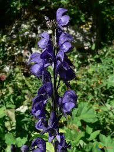
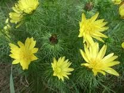
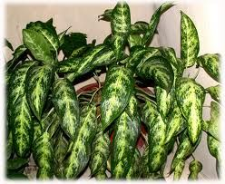
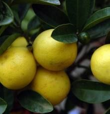
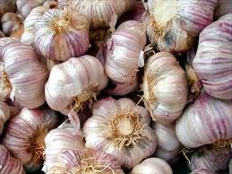
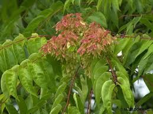
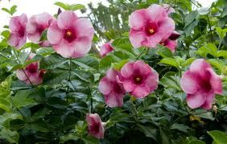
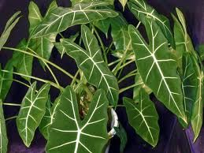
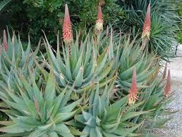
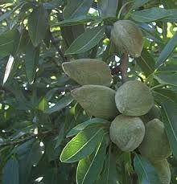
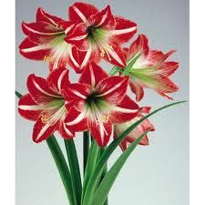
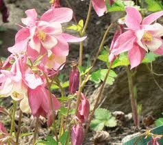
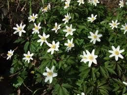
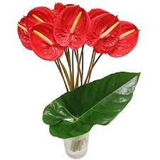
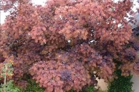
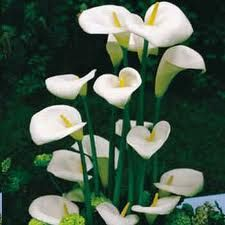
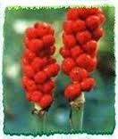
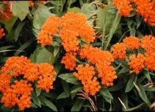
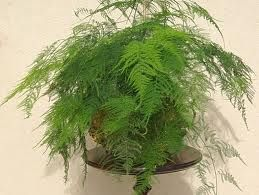
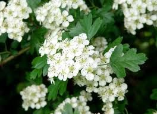
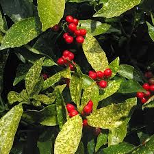
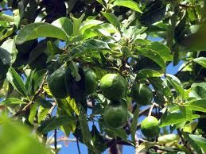
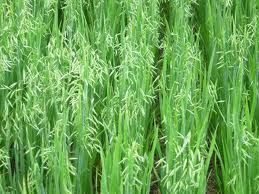
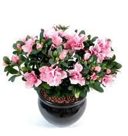
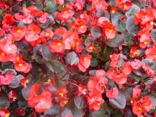
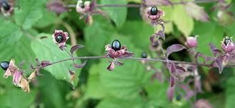
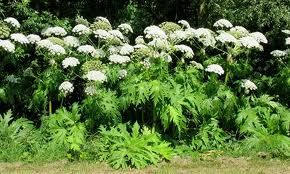
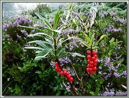
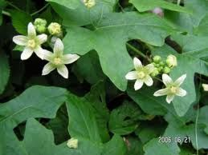
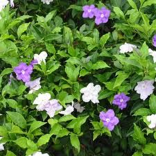
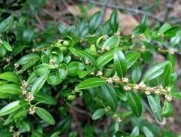
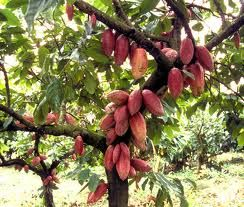
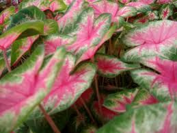
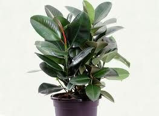
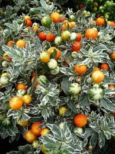
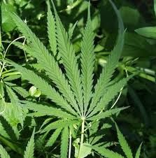
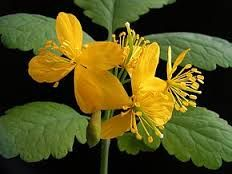
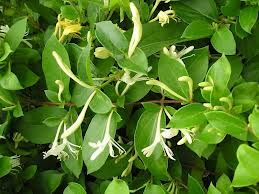
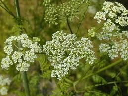
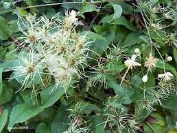
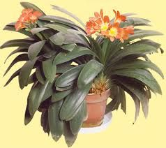
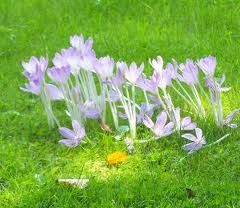
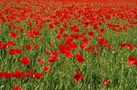
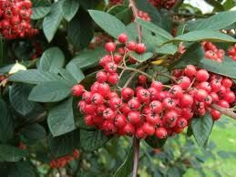
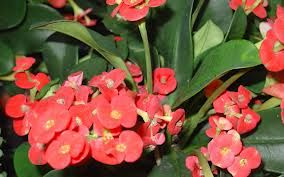
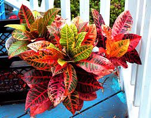
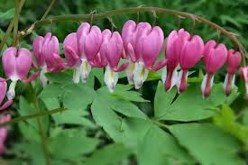
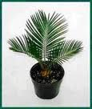
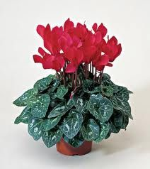
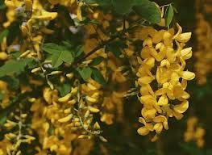